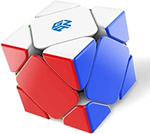
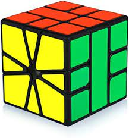
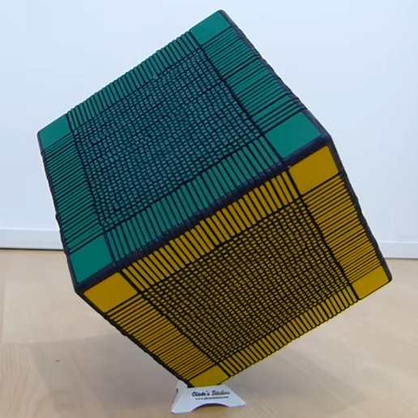
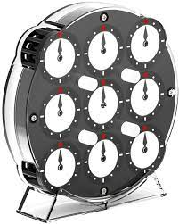
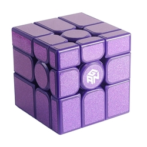
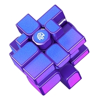
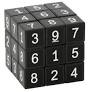
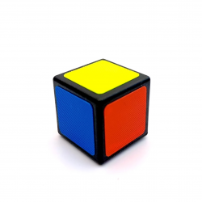

D'autres cubes
Il existe une multitude de cubes avec une multitude de formes. Certains sont très difficiles et d'autres sont plutôt simples. Ces cubes offrent une expérience nouvelle avec de nouveaux algorithmes, de nouvelles méthodes et donc une expansion de l'univers du Rubik's Cube. En voici quelques uns particulièrement intéressants.
Le skewb
En apparence simple, ce cube est assez déroutant car il est très différent du 3x3. En effet, on ne tourne plus autour des centres, mais autour des coins, un peu comme sur un Pyraminx. Ce cube est très populaire car très simple une fois que l'on a bien compris son fonctionnement. La méthode pour débutants ne contient qu'un seul algorithme et il est donc très abordable pour des nouveaux venus dans le monde du cubing. Néanmoins, un bon skewb nécessite un investissement : un "GAN skewb enhanced" coûte environ 30 €.
Le Square-1
Le Square-1 va faire rager beaucoup de monde au même titre que le mirror que nous verrons après. Ce cube, si on peut appeler cela un cube, est en fait une forme géométrique sans nom prédéfini lorsqu'il est mélangé, ce qui en fait un cube très difficile. Il est néanmoins très fun et très satisfaisant à remettre dans son état normal.
Le 33x33
Le Rubik's Cube 33x33 est le plus gros cube résolu. Il a été résolu par le Français Grégoire Pfennig en plus de 205 heures. Ce temps est moins étonnant quand on sait que ce cube a 1.159x104094 combinaisons possibles.
Le Rubik's Clock
Le Rubik's Clock ou juste Clock n'est pas un cube, mais reste tout de même un casse-tête de la gamme Rubik's Cube. Il est néanmoins très simple. Le principe est tout simplement de faire pointer toutes les aiguilles des deux faces vers midi. Dur au début, simple après apprentissage.
Mirror
 Le mirror est en fait un cube 3x3, mais les couleurs sont remplacées par des formes géométriques. Il est donc très difficile de faire la correspondance entre les couleurs du 3x3 et les formes géométriques du Mirror, mais les algorithmes restent exactement les mêmes que pour le 3x3.
Sudoku
Vous ne rêvez pas, il existe bel et bien un Rubik's Cube Sudoku. Le principe repose sur le Sudoku : il doit y avoir sur chaque face les chiffres 1, 2, 3, 4, 5, 6, 7, 8 et 9. Juste une chose à dire : bonne chance. Ce cube est absolument horrible à terminer du fait que les nombres ne soient pas aussi reconnaissables que des couleurs.
Le Rubik's Cube 1x1
Le Rubik's Cube 1x1 est présenté ici non pas pour l'aspect cubing (car vous vous en doutez, il n'y a rien d'intéressant) mais bien pour le buzz qu'il y a avec ce cube. En effet, on trouve sur YouTube beaucoup de vidéos relatant la "difficulté" de ce cube. Il était intéressant de mentionner ce cube si populaire...
Conclusion
Je vous ai présenté un certain nombre de cubes tout au long de cette page et tout au long de mon site, mais sachez qu'il existe bien d'autres tailles et formes de cube dont les autres cubes WCA non mentionnés qui vont du 5x5 au 7x7. Certains cubes tels que le 3x3 mais aussi bien d'autres, ont des catégories spéciales telles que la résolution à l'aveugle ou à une main.